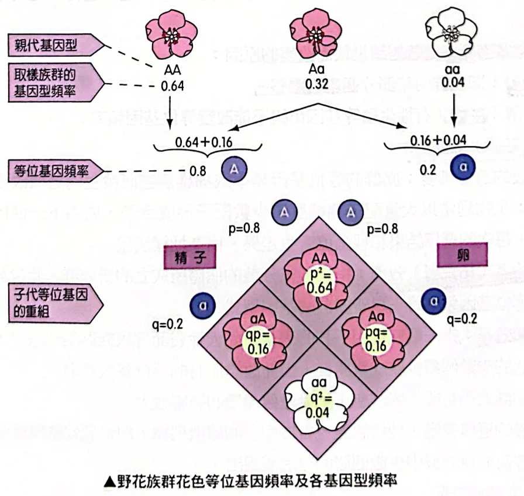
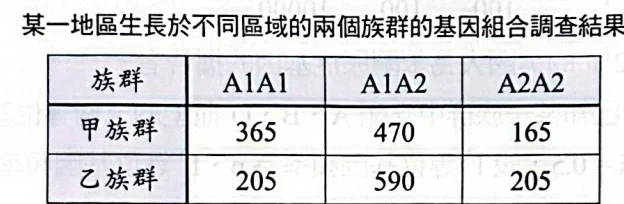
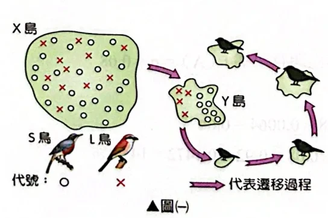
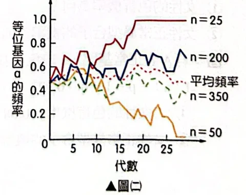
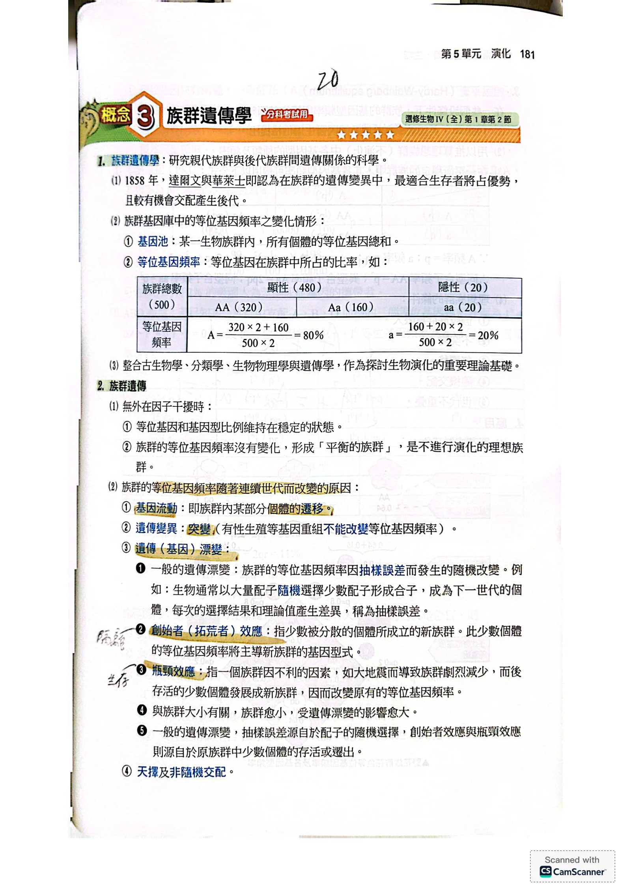
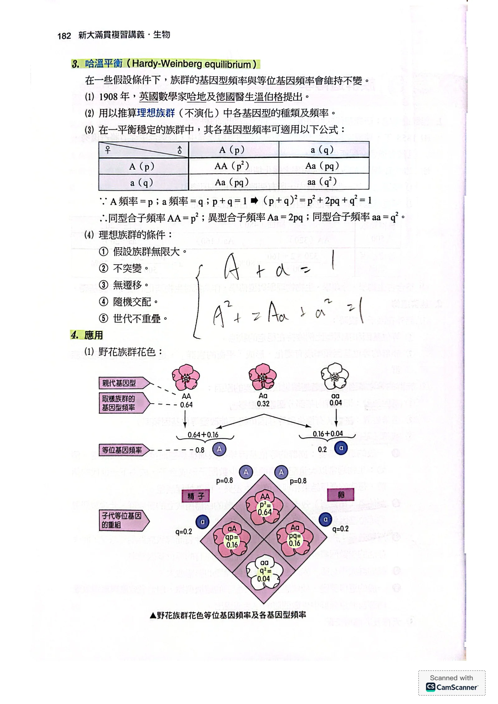
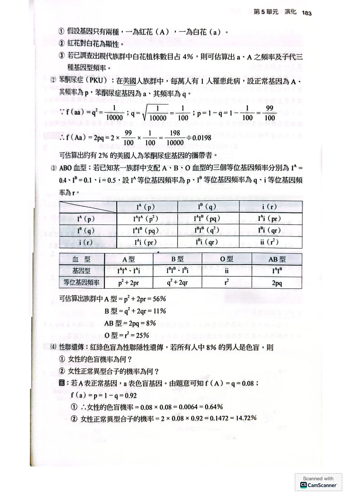
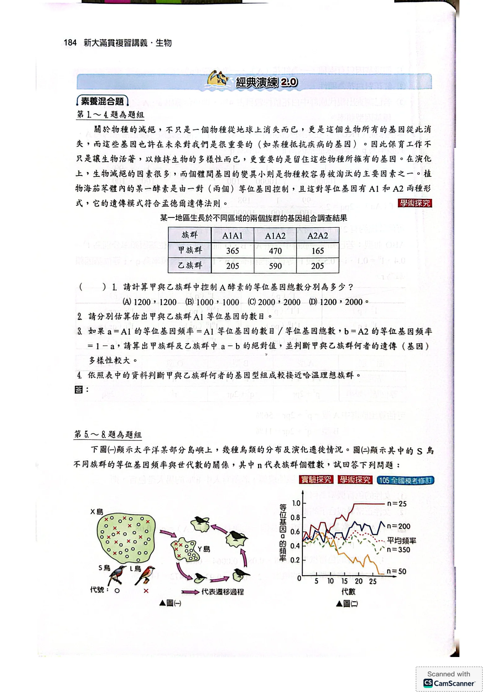
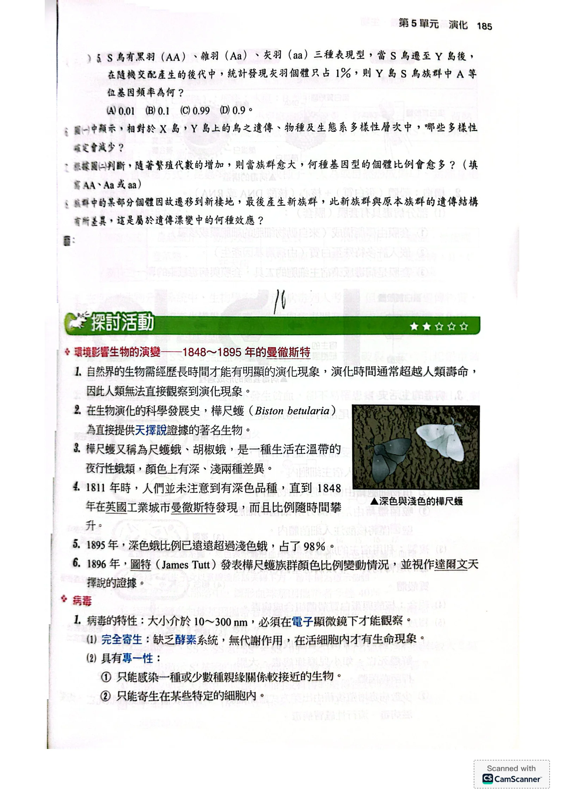

族群遺傳與等位基因頻率
- 這節要問：如何把族群中的遺傳差異換算成數字？
- 族群遺傳學研究親代族群與後代族群之間的遺傳關係。
- 1858 年，達爾文與華萊士認為，族群中較適合生存的個體占優勢，因此較有機會交配並產生後代。
- 基因池是某生物族群內所有個體的等位基因總和。
- 等位基因頻率是某種等位基因在族群中所占的比例。
- 族群遺傳學整合古生物學、分類學、生物物理學與遺傳學，成為探討生物演化的重要理論基礎。
- 等位基因總數＝500 × 2＝1000，因為每個個體在此基因座有兩個等位基因。
- A 數目＝320 × 2＋160＝800，因為每個 AA 貢獻兩個 A，每個 Aa 貢獻一個 A。
- A 頻率＝800 ÷ 1000＝0.8＝80%，因為頻率是 A 數目除以等位基因總數。
- a 數目＝160＋20 × 2＝200，因為每個 Aa 貢獻一個 a，每個 aa 貢獻兩個 a。
- a 頻率＝200 ÷ 1000＝0.2＝20%，因為頻率是 a 數目除以等位基因總數。
族群頻率為什麼改變
- 這節要問：哪些因素會改變族群的遺傳組成？
- 理想的平衡族群中，等位基因頻率不變，所以不發生演化。
- 基因流動來自部分個體的遷移；遷入或遷出會改變族群的等位基因組成。
- 突變會產生遺傳變異，可能改變等位基因頻率。
- 有性生殖的基因重組改變等位基因的組合，單獨重組不能改變等位基因頻率。
- 遺傳（基因）漂變是等位基因頻率因抽樣誤差而隨機改變。
- 大量配子中只有部分隨機結合成下一代；抽到的比例與理論值可能不同，這就是抽樣誤差。
- 族群越小，遺傳漂變影響越大，因為少數個體的隨機差異占整體的比例較高。
- 創始者（拓荒者）效應：少數分散的個體建立新族群；其等位基因頻率主導新族群的基因型式。
- 瓶頸效應：地震等不利因素使族群劇減；少數存活者形成的族群可能改變原有等位基因頻率。
- 一般漂變的抽樣誤差來自配子隨機選擇；創始者與瓶頸效應則來自少數個體被選出或存活。
- 天擇與非隨機交配也會影響族群遺傳組成；非隨機交配會改變基因型比例。
哈溫平衡的公式與條件
- 這節要問：什麼條件下能由等位基因頻率推算基因型頻率？
- 1908 年，英國數學家哈地與德國醫生溫伯格提出哈溫平衡（Hardy-Weinberg equilibrium）。
- 在假設條件下，族群的等位基因頻率和基因型頻率維持不變，可用來推算不演化的理想族群。
- 設 A 頻率為 p，a 頻率為 q；若只有這兩種等位基因，則 p＋q＝1，因為兩者涵蓋全部等位基因。
- 隨機結合時，AA 頻率＝p × p＝p²，因為兩個配子都要提供 A。
- Aa 頻率＝p × q＋q × p＝2pq，因為 A 和 a 可分別來自任一親代。
- aa 頻率＝q × q＝q²，因為兩個配子都要提供 a。
- 因此 p²＋2pq＋q²＝1，因為 AA、Aa、aa 涵蓋全部基因型。
- 理想族群假設無限大，因為這樣可排除遺傳漂變。
- 假設不突變、無遷移，因為這些因素會改變等位基因頻率。
- 假設隨機交配，因為配子按頻率隨機結合才能得到 p²、2pq、q²。
- 假設世代不重疊，便於依世代計算。
- 書上列出以上五項。另外也要沒有天擇，因為不同基因型若有不同生殖成功率，頻率可能改變。
應用一：野花與苯酮尿症
- 這節要問：知道隱性表現型比例，如何估計帶因者與其他基因型？
- 野花紅花 A 對白花 a 為顯性；白花必為 aa。
- 白花占 4%，所以 q²＝0.04，因為白花是隱性同型合子。
- q＝√0.04＝0.2，因為 q 是非負頻率。
- p＝1－0.2＝0.8，因為 p＋q＝1。
- AA 頻率＝p²＝0.8 × 0.8＝0.64，因為 AA 從兩個配子都取得 A。
- Aa 頻率＝2pq＝2 × 0.8 × 0.2＝0.32，因為 A 和 a 可由兩個親代交換來源。
- aa 頻率＝q²＝0.2 × 0.2＝0.04，因為兩個配子都提供 a。

野花族群花色的等位基因頻率及各基因型頻率原講義PDF第72頁・印刷第182頁・點圖放大
- 苯酮尿症（PKU）例子：美國人族群中，每萬人有 1 人患病；設正常等位基因 A 的頻率為 p，致病等位基因 a 的頻率為 q。
- q²＝1／10000，因為患者為 aa。
- q＝√（1／10000）＝1／100，因為 q 為非負頻率。
- p＝1－q＝99／100，因為兩種等位基因頻率之和為 1。
- Aa 頻率＝2pq＝2 × 99／100 × 1／100＝0.0198，因為帶因者有一個 A 和一個 a。
- 帶因者約占 1.98%，所以約有 2% 的美國人是苯酮尿症基因的攜帶者。
應用二：ABO 血型與性聯遺傳
- 這節要問：三種等位基因或性聯基因，如何推算各類個體比例？
- ABO 例子設 IA 頻率 p＝0.4、IB 頻率 q＝0.1、i 頻率 r＝0.5；三者相加為 1。
- A 型＝p²＋2pr＝0.4²＋2 × 0.4 × 0.5＝0.56＝56%，因為兩種 A 型基因型都要計入。
- B 型＝q²＋2qr＝0.1²＋2 × 0.1 × 0.5＝0.11＝11%，因為兩種 B 型基因型都要計入。
- AB 型＝2pq＝2 × 0.4 × 0.1＝0.08＝8%，因為 IA 和 IB 可分別來自任一親代。
- O 型＝r²＝0.5 × 0.5＝0.25＝25%，因為兩個等位基因都必須是 i。
- 紅綠色盲是性聯隱性遺傳。設正常等位基因 A 頻率 p、色盲等位基因 a 頻率 q；假設男性中 8% 色盲。
- q＝0.08，因為男性只有一條 X 染色體，帶 a 就表現色盲。
- p＝1－0.08＝0.92，因為 A 和 a 的頻率和為 1。
- 女性色盲頻率＝q²＝0.08 × 0.08＝0.0064＝0.64%，因為女性兩條 X 都要帶 a。
- 女性正常異型合子頻率＝2pq＝2 × 0.92 × 0.08＝0.1472＝14.72%，因為 A 與 a 可來自任一親代。
經典演練：海茄苳族群題組 1–4
- 這節要由各基因型個體數，計算等位基因與比較平衡狀態。

兩個海茄苳族群的基因組合調查結果原講義PDF第74頁・印刷第184頁・點圖放大
請計算甲與乙族群中控制 A 酵素的等位基因總數分別為多少？
(A)1200，1200 (B)1000，1000 (C)2000，2000 (D)1200，2000。
看答案與詳解收起
答C：甲、乙各 2000。
解- 甲的個體數＝365＋470＋165＝1000，因為三種基因型涵蓋全部個體。
- 乙的個體數＝205＋590＋205＝1000，因為同樣將三類相加。
- 兩族群各有 1000 × 2＝2000 個等位基因，因為每個個體有一對等位基因。
- 因此選 (C)。
小結兩族群各有 1000 個個體，每個個體有兩個等位基因，所以各有 2000 個。
看答案與詳解收起
答甲 1200 個；乙 1000 個。
解- 甲族群 A1＝365 × 2＋470＝1200，因為 A1A1 每株有兩個 A1，A1A2 每株有一個。
- 乙族群 A1＝205 × 2＋590＝1000，因為以相同方式計數。
小結A1 數目＝2 × A1A1 個體數＋A1A2 個體數。
如果 a＝A1 的等位基因頻率＝A1 等位基因的數目／等位基因總數，b＝A2 的等位基因頻率＝1－a，請算出甲族群及乙族群中 a－b 的絕對值，並判斷甲與乙族群何者的遺傳（基因）多樣性較大。
看答案與詳解收起
答甲為 0.2；乙為 0；乙族群的基因多樣性較大。
解- 甲的 a＝1200／2000＝0.6，因為 A1 有 1200 個，共 2000 個等位基因。
- 甲的 b＝1－0.6＝0.4，因為只有 A1、A2 兩種。
- 甲的 |a－b|＝|0.6－0.4|＝0.2。
- 乙的 a＝1000／2000＝0.5，b＝1－0.5＝0.5，因為兩類頻率總和為 1。
- 乙的 |a－b|＝|0.5－0.5|＝0。
- 乙的兩種等位基因比例較均衡，因此依此指標有較大的基因多樣性。
小結甲的頻率為 0.6、0.4；乙各 0.5，乙較均衡。
依照表中的資料判斷甲與乙族群何者的基因型組成較接近哈溫理想族群。
看答案與詳解收起
答甲族群。
解- 甲的 p＝0.6、q＝0.4，因為 A1 與 A2 頻率分別為 0.6、0.4。
- 平衡時甲的預期比例＝p²：2pq：q²＝0.36：0.48：0.16，因為三種基因型依配子隨機結合形成。
- 甲的實際比例＝0.365：0.470：0.165，與預期相近。
- 乙的 p＝q＝0.5，預期比例為 0.25：0.50：0.25，因為代入 p²、2pq、q²。
- 乙實際比例為 0.205：0.590：0.205，與預期相差較大，因此甲較接近。
小結各族群先各自求等位基因頻率，再比較觀察比例與 p²：2pq：q²。
經典演練：島嶼鳥類題組 5–8
- 這節要運用島嶼遷移圖與等位基因頻率圖，分析頻率與遺傳漂變。

圖（一）：島嶼鳥類的分布與遷移原講義PDF第74頁・印刷第184頁・點圖放大

圖（二）：S 鳥各族群的等位基因頻率與世代數原講義PDF第74頁・印刷第184頁・點圖放大
S 鳥有黑羽（AA）、雜羽（Aa）、灰羽（aa）三種表現型，當 S 鳥遷至 Y 島後，在隨機交配產生的後代中，統計發現灰羽個體只占 1%，則 Y 島 S 鳥族群中 A 等位基因頻率為何？
(A)0.01 (B)0.1 (C)0.99 (D)0.9。
看答案與詳解收起
答D：0.9。
解- q²＝0.01，因為灰羽 aa 占 1%。
- q＝√0.01＝0.1，因為 q 是 a 的非負頻率。
- p＝1－q＝1－0.1＝0.9，因為 A、a 頻率總和為 1。
- A 的頻率是 p，所以選 (D)。
小結灰羽 aa 占 1% → q＝0.1 → A 頻率 p＝0.9。
圖(一)中顯示，相對於 X 島，Y 島上的鳥之遺傳、物種及生態系多樣性層次中，哪些多樣性確定會減少？
看答案與詳解收起
答遺傳多樣性。
解- 遺傳多樣性確定減少：只有少數個體從 X 島遷到 Y 島，只帶走原族群的一部分基因。
- 物種多樣性沒有減少：X、Y 兩島都有 S 鳥與 L 鳥。
- 生態系多樣性無法判斷：圖中沒有畫出兩島的生態系。
小結少數個體遷到新島只帶走部分基因，所以遺傳多樣性減少。
根據圖(二)判斷，隨著繁殖代數的增加，則當族群愈大，何種基因型的個體比例會愈多？（填寫 AA、Aa 或 aa）
看答案與詳解收起
答Aa。
解- 圖中較大的族群（n＝200、350），a 頻率維持在 0.5 附近，因為族群大，遺傳漂變影響小。
- Aa 頻率＝2pq；p、q 都接近 0.5 時，2pq 接近最大值 0.5。
- 小族群則不同：n＝25 的 a 頻率到 1，全是 aa；n＝50 的 a 頻率接近 0，幾乎全是 AA。兩者的 Aa 都很少。
小結大族群的 p、q 都接近 0.5，所以 Aa 比例最高。
族群中的某部分個體因故遷移到新棲地，最後產生新族群，此新族群與原本族群的遺傳結構有所差異，這是屬於遺傳漂變中的何種效應？
看答案與詳解收起
答創始者（拓荒者）效應。
解- 少數個體遷到新棲地並成立新族群，符合創始者效應。
- 新族群的基因來自少數創始個體，因而其等位基因比例可能與原族群不同。
小結少數個體建立新族群，造成頻率可能不同，是創始者效應。
本篇整理
- 這節要整理等位基因、基因型與族群變化的關係。
下一篇接著看樺尺蛾的探討活動與病毒。
核對原講義全頁（生物2 PDF71–75）
對應印刷181–185頁：PDF71–73為概念3，PDF74至75上半為經典演練1–8；PDF75探討活動起為下一篇。此處演練書上無附答案，依內容逐題推導。書上色盲例題把A、a的頻率標反（f(A)=q=0.08），本篇依計算寫成色盲基因a的頻率為0.08。

PDF第71頁／印刷第181頁
PDF第72頁／印刷第182頁
PDF第73頁／印刷第183頁
PDF第74頁／印刷第184頁
PDF第75頁／印刷第185頁